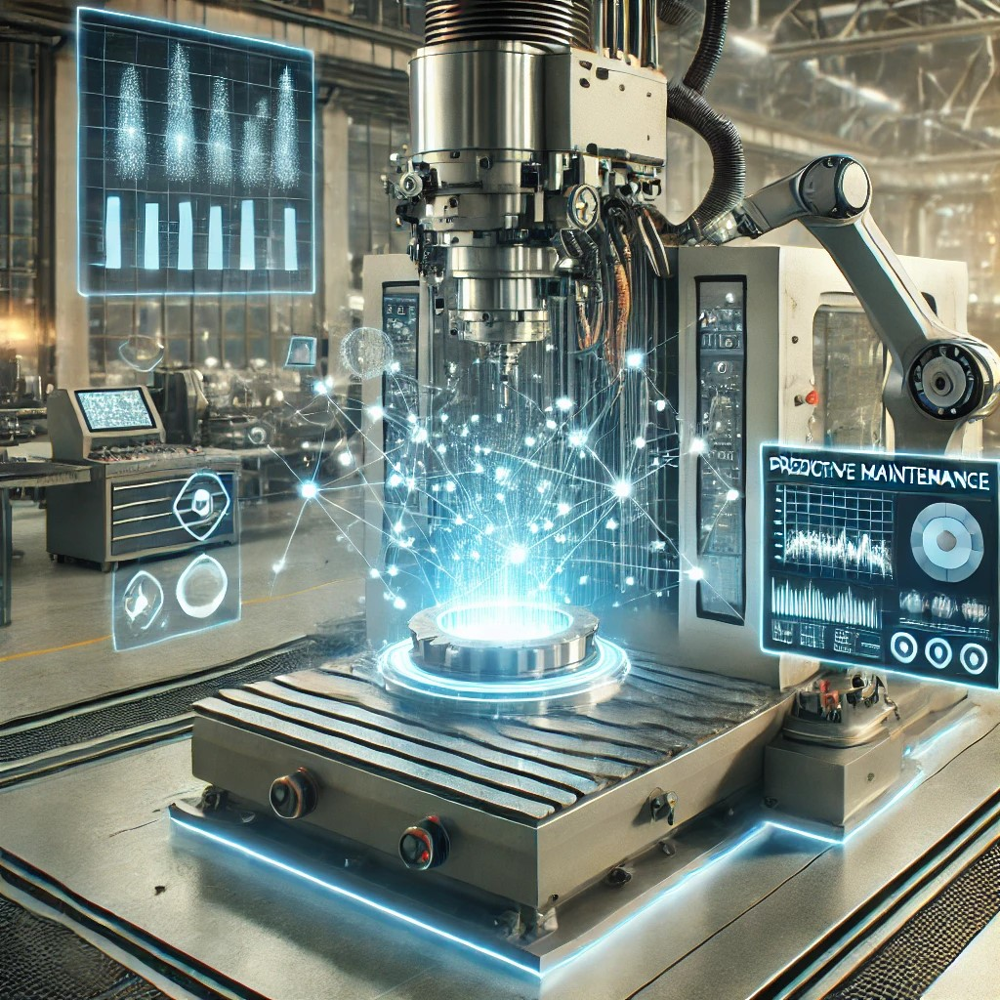
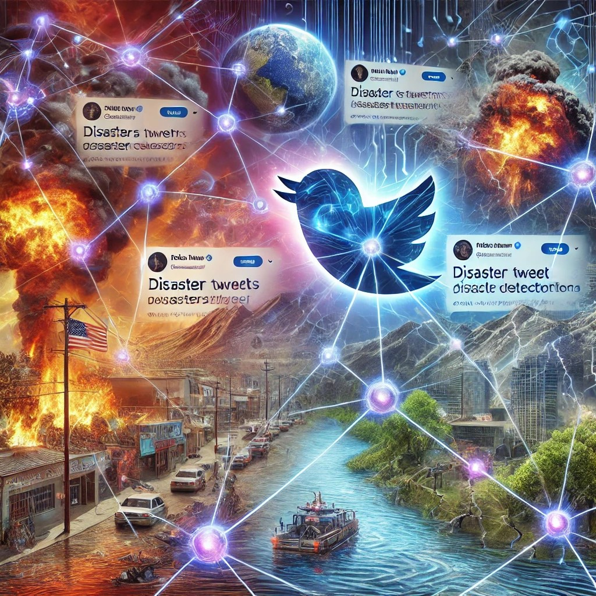

PROJECTS

STOCK FORECASTING
Developed an interactive app for predicting stock prices using sentiment analysis of financial news.

PREDICTIVE MAINTENANCE
Designed an ML model to predict failures in industrial milling machines, reducing downtime.

DISASTER TWEETS
Built a machine learning model to classify tweets related to disasters for emergency response planning.